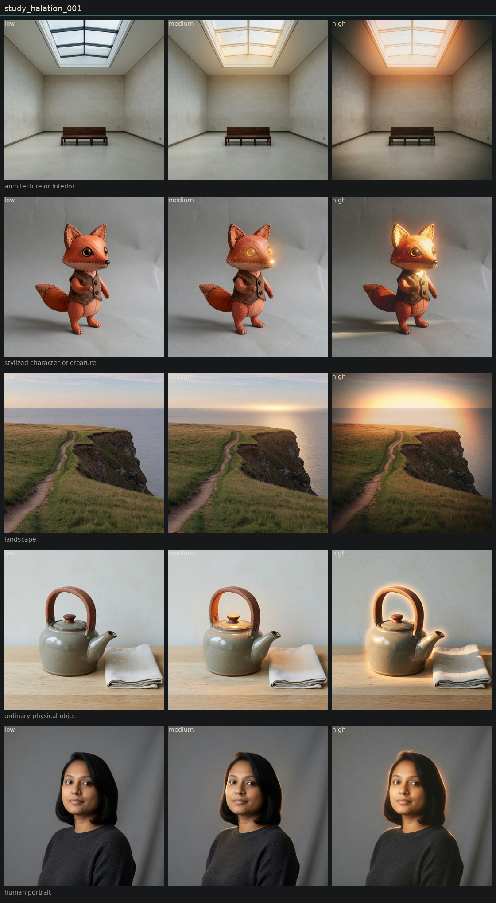

Controlled variation of halation
Hold subject via locked anchor images. image_edit each anchor to low, medium, and high of one candidate. Do not change other dimensions on purpose.
A glow appears at the high pole, but it is rarely film-base bleed around existing highlights. Imagine invents rim lights, sunsets, or silhouette auras. Architecture around the skylight is the best local-bleed example. Keep provisional.

human portrait

low · obs_0036

medium · obs_0037

high · obs_0038
ordinary physical object

low · obs_0039

medium · obs_0040

high · obs_0041
architecture or interior

low · obs_0042

medium · obs_0043

high · obs_0044
landscape

low · obs_0045

medium · obs_0046

high · obs_0047
stylized character or creature

low · obs_0048

medium · obs_0049

high · obs_0050
Entanglement
- Halation and highlight bloom are not separated by the current prompts.
- Scenes without strong practicals grow new lights instead of bleeding old ones.
- Landscape high changed time of day.
Next
- Rerun halation on a night interior that already contains lamps.
- Discrimination: halation vs highlight bloom vs final bloom vs veiling glare.